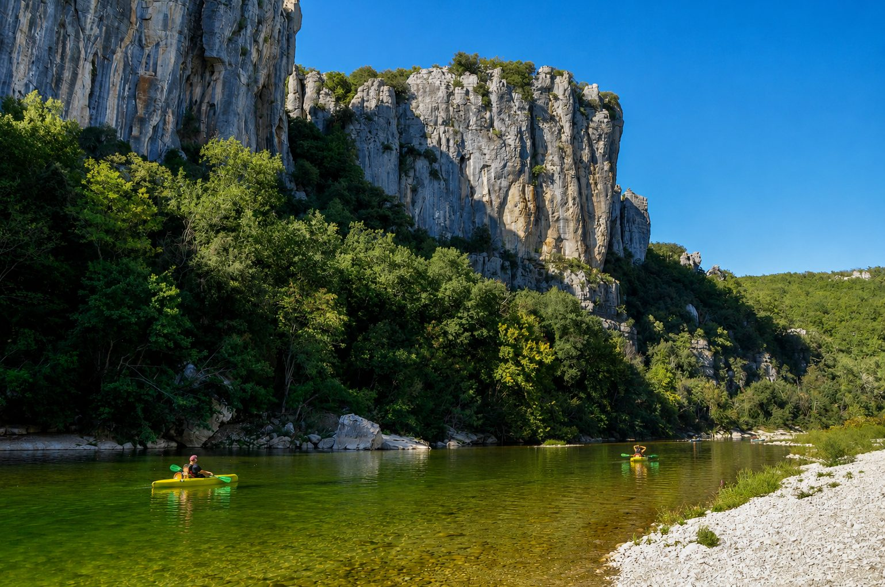

Entre granit et calcaire, les gorges du Chassezac creusent un canyon sauvage de 15 kilomètres entre l'Ardèche et la Lozère, au pied de la célèbre forêt de Païolive. À environ 1h15 des Cabritas, c'est une alternative plus confidentielle aux Gorges de l'Ardèche, pour les amateurs de nature préservée.

Une rivière préservée, pionnière en France
Le Chassezac est une rivière sauvage, toujours en eau, idéale pour le canoë-kayak. Elle a été la première rivière de France à mettre en place des quotas de navigation pour les canoës et kayaks, une démarche pionnière qui permet de préserver ce site exceptionnel tout en continuant à l'explorer dans de bonnes conditions.
Des parcours pour tous les niveaux
Des descentes de 3, 7 ou 10 kilomètres sont proposées, adaptées à tous les niveaux, y compris aux familles avec de jeunes enfants dès 5 ans sur les parcours les plus courts. Les gorges se situent sur la commune de Berrias-et-Casteljau, à 6 km des Vans et 15 km de Joyeuse, dans un cadre nettement moins fréquenté que les Gorges de l'Ardèche en haute saison.
Bon à savoir avant votre sortie
En raison des quotas de navigation, il est conseillé de réserver à l'avance en été. Prévoyez des chaussures adaptées à l'eau. La sortie se combine idéalement avec une promenade dans le Bois de Païolive tout proche, célèbre pour ses formations rocheuses dolomitiques aux formes étranges.
Infos pratiques depuis Les Cabritas
- Distance depuis Flaviac : environ 1h15 de route
- Meilleure période : de mai à septembre
- Idéal pour : canoë, baignade, nature préservée, familles
Envie de découvrir Les Gorges du Chassezac depuis votre gîte en Ardèche ?
Les Cabritas vous accueillent à Flaviac, au cœur de l'Ardèche, pour un séjour confortable avec piscine privée, à deux pas des plus beaux sites de la région.
Vérifier les disponibilités